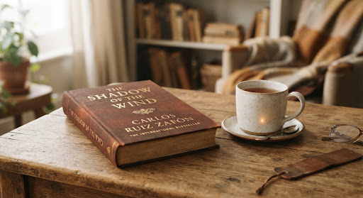
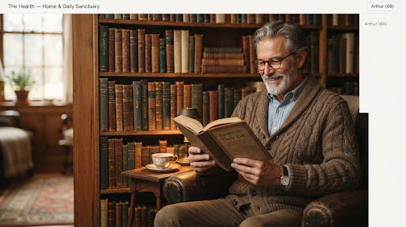
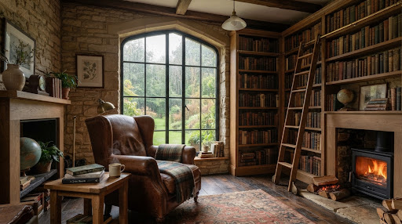
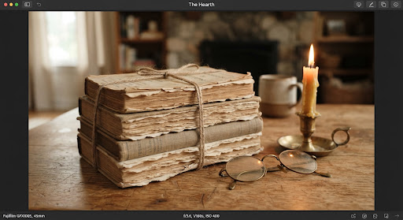

Welcome back to the fireside, Clara.
Outside, a gentle rain taps upon the window panes. Settle in; your pages await.

The Shadow of the Wind
Carlos Ruiz Zafón · Trans. Lucia Graves
Approx. 2h 45m remaining at your reflective pace
“Every book, every volume you see here, has a soul. The soul of the person who wrote it and of those who read it and lived and dreamed with it.”
Salon: The Secret History by Donna Tartt
Gather around the parlor fire to dissect morality, aesthetic fanaticism, and the Hampden Greek scholars.
“Beauty is terror. Whatever we call beautiful, we quiver before it. Do you believe Julian Morrows romanticization of antiquity pushed the students to their limit?”

Today's Quiet Margin Note
A comforting fragment preserved from reader desks around the globe today.
“There are darknesses in life and there are lights, and you are one of the lights, the light of all lights.”
The Reading Nooks Awaiting You
Three companion volumes tailored for rainy evenings and quiet contemplation.
A Month in the Country
J.L. Carr • 135 pages
A quiet, sun-dappled meditation on recovery, ancient wall frescoes, and tranquil summer sanctuaries.

Days at the Morisaki Bookshop
Satoshi Yagisawa • 160 pages
Gentle healing nestled within second-hand stacks in Tokyo's Jimbocho literary neighborhood.

The Remains of the Day
Kazuo Ishiguro • 258 pages
Masterful restraint, unvoiced longings, and the wistful melancholy of evening light over English downs.